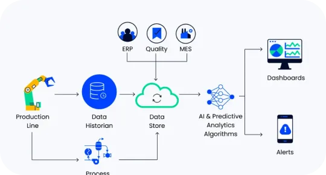
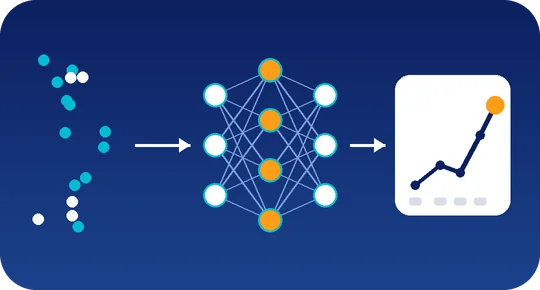

De Excel a decisiones: qué incluir en tu primer dashboard
Una guía para identificar cuándo los reportes manuales empiezan a limitar la gestión y qué información debería visualizar una PyME.
Publicado el
Blog
Análisis, herramientas y estrategias para que las PyMEs aprovechen mejor sus datos y optimicen sus procesos.
Una guía para identificar cuándo los reportes manuales empiezan a limitar la gestión y qué información debería visualizar una PyME.
Publicado el

Una metodología sencilla para identificar cuántas fuentes de datos debería manejar tu empresa de acuerdo con su volumen de información.
Publicado el

No todos los problemas necesitan IA. Conoce qué condiciones debe cumplir un negocio para que un modelo predictivo genere valor real.
Publicado el